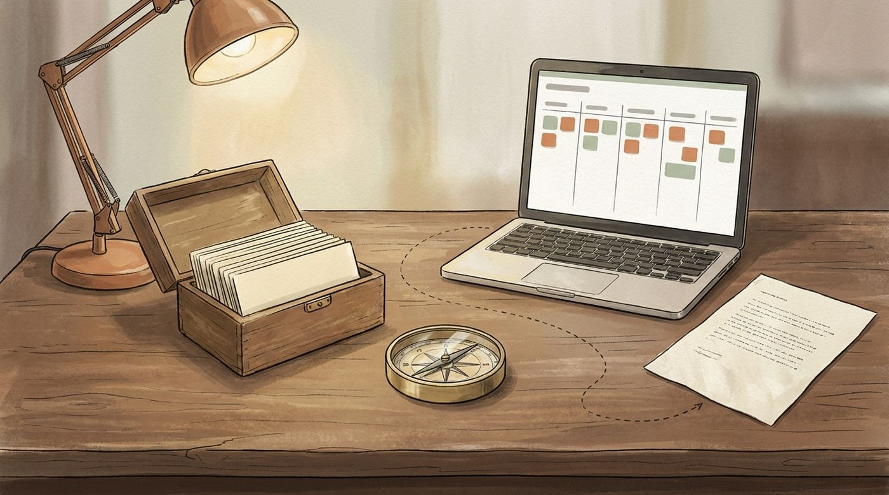
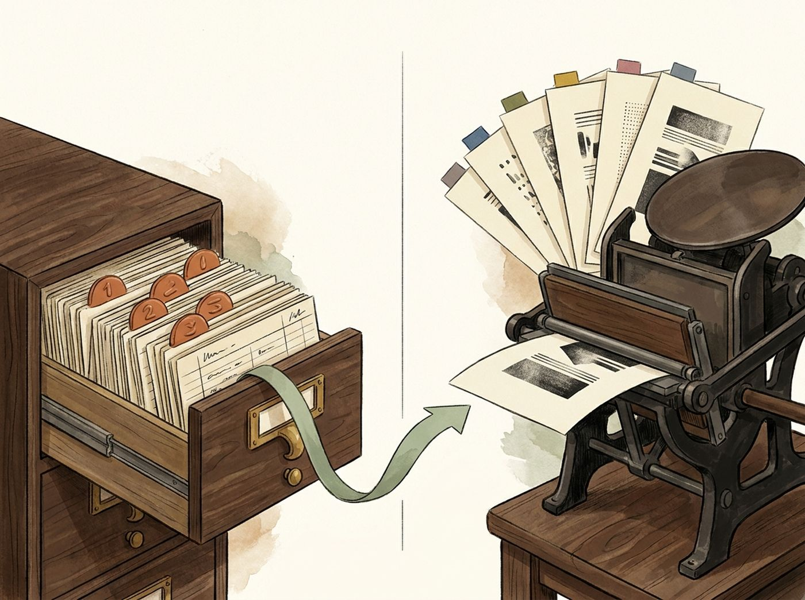
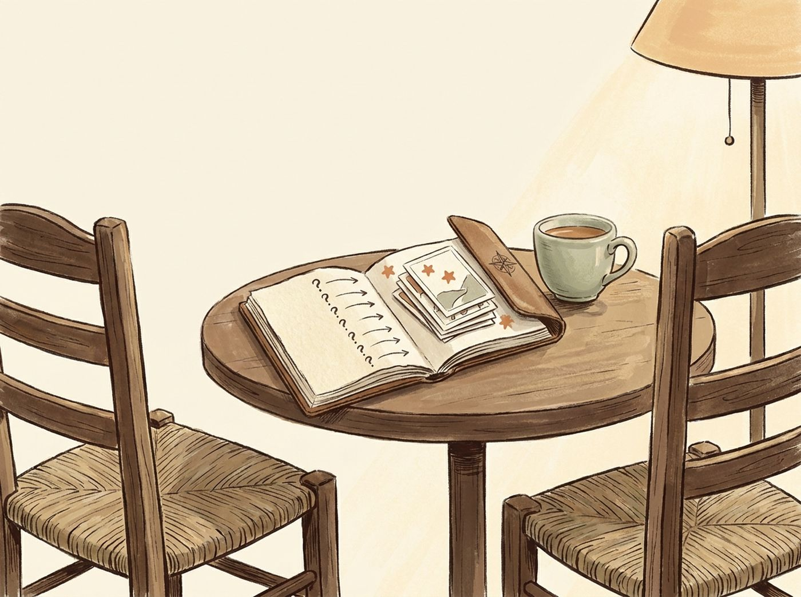
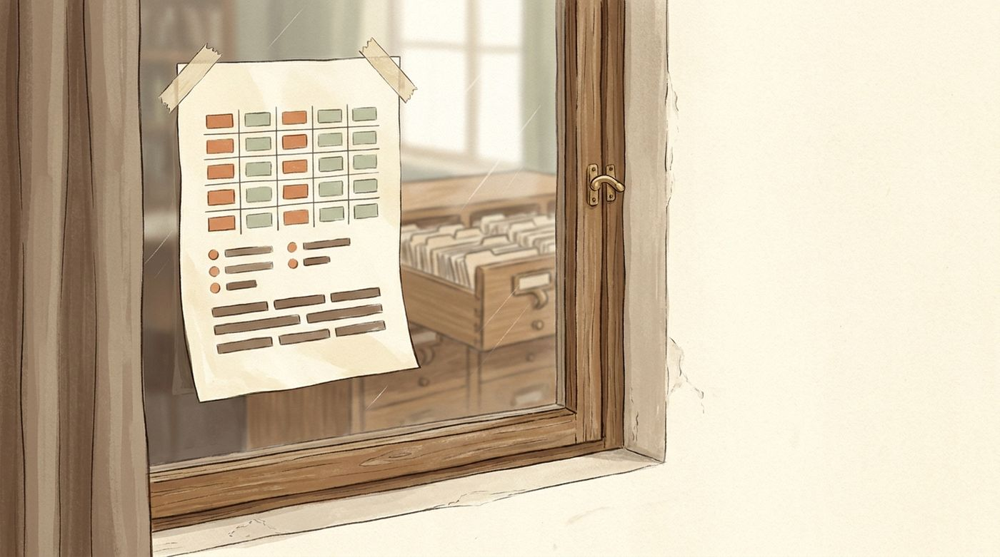
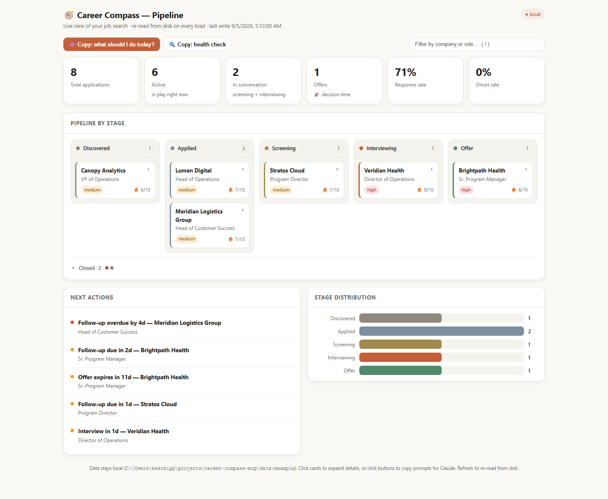

Career Compass keeps the facts about you in one place, turns them into a résumé for each posting, and builds your interview prep around the questions they will ask — and the ones you should ask back.
local-first · plain text on your disk 19 tools · 7 prompts · 9 resources · 1 dashboard runs inside Claude via MCP

Plate I The whole loop on one desk: the facts (the card box) → the pipeline (the board) → the thing you send (the page).
Panel one
How it works, in five steps
01
You talk to Claude. Claude uses the tools. The tools read and write a folder of plain text files that never leave your machine.
Install
Connect it to your Claude app with one line of config, or one click in Claude Desktop. Works with Claude Code, Cursor, Zed and any other app that speaks MCP.
npx -y career-compass-mcp
Tell it who you are
Paste your résumé, performance reviews, award emails. Claude pulls out the facts and asks for the numbers you left vague. You confirm each section before it is written.
Paste a posting. You get an honest fit score checked against your whole preference contract — salary band, remote, relocation, notice period — never a flattering one.
explore_opportunityresearch_company
Apply and track
A résumé tailored to that posting, a cover letter, an ATS-safe version — and one card on a pipeline that moves from discovered to offer. The local dashboard shows what needs attention today.
A prep package per round, a mid-process map of what has been covered and what has not, an offer broken down against your targets, and a journal that records what each step taught you.
Your first sentenceSet up my Career KB. Here's my résumé:— then paste it. That is the whole setup.
Panel two · zoom
Facts about you vs. the résumé you send
02
A résumé is not where your career lives. It is a print. The facts live in the Career KB, and every résumé is a fresh print of those facts against one posting.

Plate II One drawer of facts, many prints. The drawer is edited; the prints are generated.
The Career KB · the source
Facts about you
shape Structured, not prose. Each achievement is a metric, the context it happened in, and the impact it had.
sections profile · experience · skills · education · projects · testimonials — plus a dated journal of signals.
writes Only save_career_section writes it. One section at a time, validated first, previous version kept as a .bak. Your client asks you to confirm.
grows Every posting explored, interview debriefed, and offer weighed can add a dated signal back. It can also read a project's own change history and pull out what you measurably did there — months active, what you touched — so the numbers come from the record, not from memory.
achievements: - metric: cut onboarding from 6 weeks to 9 days context: 40-person support org, no runbooks impact: freed two leads for the Q3 launch # one fact. it will outlive every résumé it appears in.
tailor_resume · a rendering
The résumé you send
input The KB and one posting. Nothing else.
output The résumé text in the format you chose — standard, federal, academic, or functional; one to four pages — plus a Keyword Match Report naming which of the posting's terms it covered.
writes Nothing. A résumé is disposable; the facts are not. Edit a print and the drawer does not change. Add a fact to the drawer and every future print improves.
thengenerate_cover_letter for the story, format_for_ats for the parser (Workday, Greenhouse, Lever and five more).
The habit this builds: when something goes well at work, add the fact — not "update my résumé." The résumé is an output.
Panel three · zoom
Interview prep — how we help you ask
03
An interview is two lists of questions. Career Compass prepares both: the ones they will ask you, answered from your own facts — and the ones you should ask them, which is where most candidates go quiet.

Plate III Two chairs, one notebook, both pages filled before you sit down.
What prepare_interview hands you, per round
Opening pitch, 60–90 seconds
"Tell me about yourself," bridged to this role and this company — not your life story.
7–10 STAR stories from your facts
Situation, Task, Action — clear about your own part, without erasing the team — and a Result with the number. Each tagged with the question type it answers. The themes shift by round: phone screen, behavioral, technical, panel, final.
10–15 likely questions
Specific to the company and role, each with an answer angle from your own background.
7–10 questions to ask them
Thoughtful, not generic — built from the company research and the posting's own gaps. This is the half that is usually improvised in the room. Here it is prepared before you walk in.
Company and role alignment
How your background connects to their mission, product, and current problems.
Bridge topics
The surprising connections between your experience and their world.
Watch-outs and reframes
The concerns they are likely to raise about your background, each with an honest answer ready — so when the question comes, you are not improvising. Prepared, not volunteered.
Between rounds
Tips the tools are built around
Ask about the gap, not the perk. The posting always leaves something unsaid — the team's size, who owns the roadmap, why the seat is open. The fit check and the company brief surface those gaps, and they become your first questions.
Don't repeat ground already covered. Between rounds, ask for the map of the process so far: what each round surfaced, the open threads, the untested gaps, and the questions the next round is most likely to ask.
Debrief while it's fresh. Right after an interview, tell Claude what the room told you. The durable part goes into your journal, and your next prep starts from it instead of from zero.
Say the number, then the context. Every STAR story is drawn from an achievement that already has a metric. If a story has no number, that is a fact to go find — not a sentence to pad.
"Not set" is not "no." If you never told it your salary band or relocation stance, the fit check says so and asks — it will not quietly assume an answer and rule a role out on it.
Who does whatClaude does the reasoning and the writing. The tools supply your facts and the structure. Neither invents a preference you did not state.
Where your data isSimple text files in a folder on your own computer, readable in any editor. No account, no cloud sync, no tracking. The one optional outbound request is a version check.
What "honest" means hereThe fit score is a verdict, not encouragement. A role that matches on skills but misses your floor is not an 8. The Keyword Match Report shows what a résumé did not cover.
Part two · the dashboard
The dashboard looks. Claude does.
A read-only view of the same files Claude reads and writes — redrawn every time you open it. Every button on it hands you the words to ask Claude for the change. Nothing on the page can edit your search; that is the point.

Plate IV The lite dashboard: a sheet on the glass, reprinted from the drawer each time you look.
Panel four
How the dashboard works
04
Four stations. The important one is the last: the page never writes. Anything you want changed, you say to Claude — and the dashboard either hands you the words, or, with Claude Code installed, asks for you.
Open it
One command starts a tiny web server on your own computer and opens your browser. It only answers the computer you are sitting at; nothing on your network, and no other website, can reach the page.
It reads the drawer
On every request the page re-reads the pipeline file from disk and renders the whole document fresh. Nothing is cached, nothing is remembered between loads. Refresh the browser and you are looking at the files as they are right now.
You look
Six numbers across the top, a kanban by stage with the closed applications folded away, a next-actions list of what is overdue or due soon, and a stage chart. Click a card and its drawer opens: days in stage, follow-up, posting, contacts, rounds, latest note.
You ask Claude, not the page
Every button, card drawer, and next-action row carries a ready-made question — "give me a full status on my Acme application," "help me with this overdue follow-up." By default it copies the words for you to paste. Start the dashboard with --ask-claude and, if Claude Code is installed, the click asks Claude directly: the answer streams into a panel on the page, and a reload button appears once Claude may have changed your files. Either way the page itself stays read-only.
Try it with nobody's datanpx -y career-compass-mcp dashboard --sample
Opens the bundled Alex Rivera demo. Its dates shift to sit around today, and the tools refuse to write into it.

2.7.0Screenshot, not illustration · the bundled sample search · captured from the published build